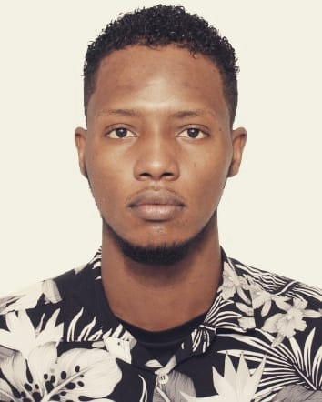

Um pouco sobre mim
postado em 27 março 2022 Meu nome é Angemydelson Saint-Bert, nasci no Haiti numa cidade chamada Gonaives que tem como apelido " a cidade da independência", tenho 21 anos.
Angemydelson Saint BertCiência da computação da UFFS
postado em 27 março 2022O Curso de Ciência da Computação da UFFS é um curso que pretende, através de bases sólidas da área de computação, formar cientistas capazes de terem um papel importante em áreas da tecnologia da informação (TI), tanto na indústria quanto na academia. O curso oferece várias opções para o estudante se aprofundar: banco de dados, computação gráfica, redes de computadores, engenharia de software, hardware e teoria da computação. Todos os professores se dedicam integralmente ao curso e todos possuem no mínimo o título de mestre, sendo que aproximadamente a metade tem o título de doutor. Esse perfil dos professores faz com que os estudantes tenham contato com assuntos de ponta da computação. Os estudantes têm acesso aos projetos de pesquisa e de extensão do curso, experiência profissional através do projeto FronteiraTec,além de várias opções de estágios em empresas da região.
Postado por Angemydelson saint BertSonhos
postado em 28 março 2022
Entendo que o futuro pertence àqueles que acreditam na beleza de seus sonhos, por isso, depois a minha chegada ao país, apesar dos desafios, estou carregando o sonho de fazer uma carreira universitária no ramo da computação em uma das prestigiosas universidades federais brasileiras. Inclusive, durante os últimos tempos tenho percebido evoluções tremendas e novas tendências na área citada. É um setor promissor tanto para o mercado de trabalho atual quanto para ter certa independência e/ou prestígio profissional, trabalhando em diversos ramos com autonomia. Estudar na UFFS é um grande diferencial na minha vida. Tenho o privilégio de conviver com docentes excelentes que poderão contribuir muito na minha qualificação para a pesquisa e o desenvolvimento com projeto de construção de software básico e o uso de sistemas computadorizados em outras áreas do mercado. Possuir o diploma dessa conceituada universidade irá engajar meu perfil profissional, pessoal, etc. E fará com que as minhas oportunidades se ampliem de forma considerável tanto no Brasil quanto no Haiti. É uma chance preciosa de mostrar que possuo capacidade de contribuir de forma orgulhosa no aprimoramento da difusão de conhecimentos nos eventos do Haiti ou na promoção educacional do Brasil.
Postado por Angemydelson Saint Bert